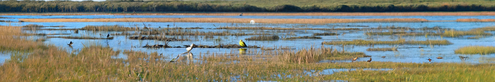

Task 1: Planar Panorama generation
A bright and airy sunroom with wicker furniture, hanging plants, and large windows

Bakery kitchen filled with the scent of freshly baked bread
Chic loft apartment with exposed brick walls and industrial decor
Elegant ballroom with crystal chandeliers and marble floors
Medieval banquet hall with long wooden tables and torches
City riverwalk with jogging paths and benches
Colorful street performers entertaining crowds
Hipster neighborhood with vintage shops and cafes
Industrial area with warehouses and shipping containers
Skyline of New York City
Magnificent canyon vista with sheer cliffs and winding rivers
Misty morning fog rolling over a tranquil river valley

Peaceful coastal marshland alive with bird calls

Rolling hills covered in golden fields of wheat
Tranquil coastal inlet with calm waters and rocky cliffs